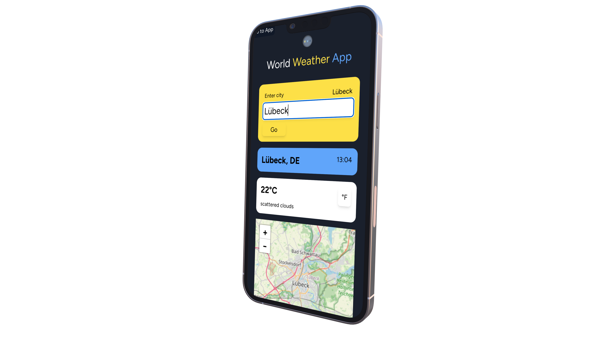
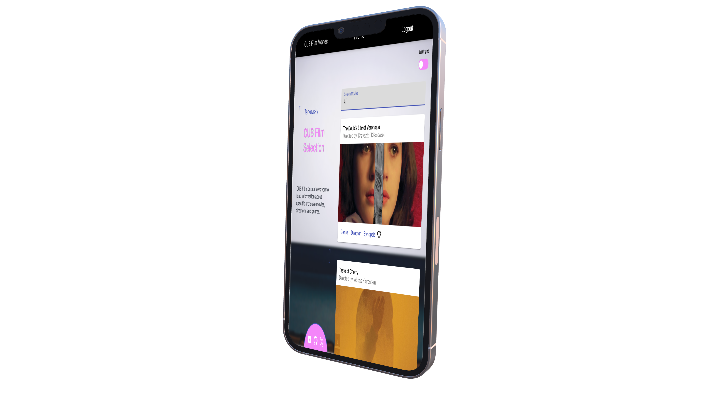
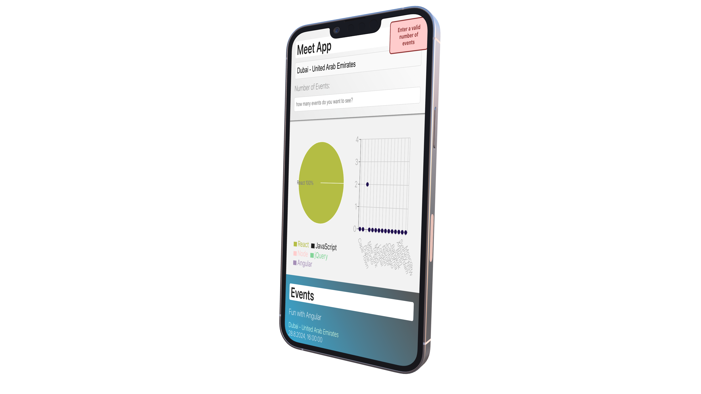
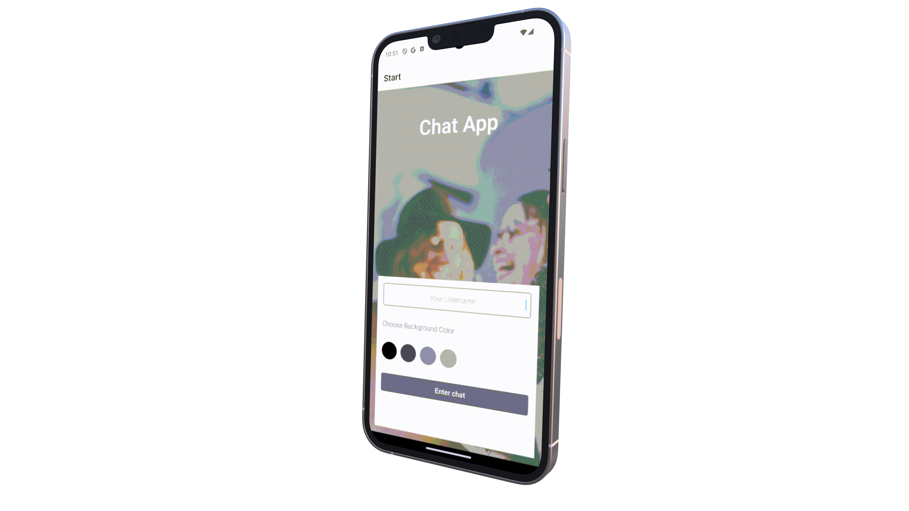
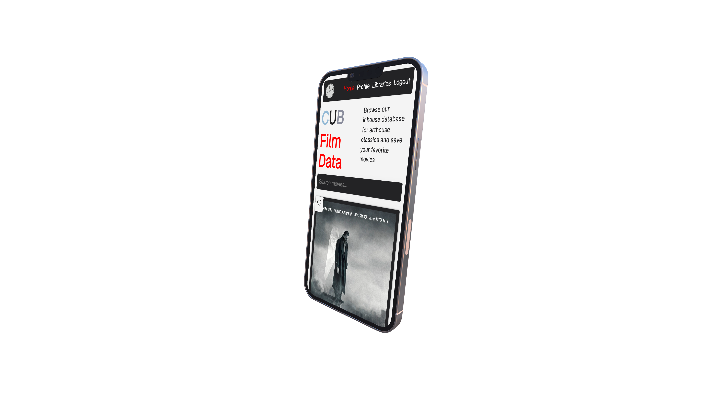

What I've been working on...
-
World Weather App
Responsive Weather Dashboard with Browser Extension
React · OpenWeatherMap API · Radix UI · Leaflet · Framer Motion
Real-time weather app with animated gradients, 5-day forecasts, interactive maps, and a custom Chrome extension.
 -
CUB Film Data (Angular)
Angular Web App for an Arthouse Movie Database
Angular · TypeScript · MongoDB · Express · SCSS
A responsive SPA for exploring arthouse films with user accounts, search/filtering, and detailed movie modals — built with Angular and TypeScript.
 -
Meet App
Progressive Web App for browsing and visualizing local events
React · AWS Lambda · OAuth · TDD · D3.js · Service Workers
Search and visualize local events in real time — with offline support, OAuth authentication, and interactive charts.
 -
Mobile Chat App
React Native Mobile App for Real-Time Messaging
React Native · Firebase · Expo · AsyncStorage · Gifted Chat
Real-time mobile chat app with anonymous login, media sharing, offline message caching, and customizable UI themes.
 -
CUB Film Data (React)
Client-Side React App for Arthouse Movie Database
React · JavaScript · MongoDB · Express · CSS
Interactive movie database with user accounts, favorites list, and dynamic filtering — built in React as the frontend of a full MERN stack app.

 Interested in working together?
Interested in working together?